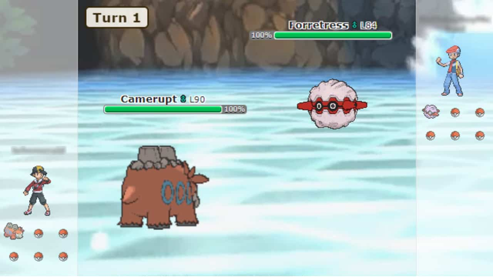

Machine Learning Pokemon Battle Bot
A Personal Project Exploring AI and Competitive Pokemon
About This Project
As a lifelong Pokemon fan, I have always been fascinated by the strategic depth of competitive Pokemon battles. This project represents the perfect intersection of my passion for Pokemon and my journey in software engineering and machine learning. It is not just about building a bot; it is about understanding battle patterns, decision making strategies, and ultimately creating an AI that can learn from thousands of battles to become a formidable opponent.
The goal is to progress from simple rule based bots to a sophisticated machine learning model that can adapt, learn, and make intelligent decisions in the complex environment of Pokemon battles. Along the way, I am documenting everything, analyzing data, and building the foundation for what I hope will become a competitive battling AI.
Pokemon Battle Rules
Pokemon battles in Gen 8 Random Battle format involve turn based combat where players control teams of 6 randomly generated Pokemon. Only one Pokemon is active at a time, and the goal is to knock out all opponent Pokemon.
Key Mechanics
- Type Matchups: Moves can be super effective (2x damage), not very effective (0.5x damage), or have no effect based on Pokemon types
- STAB Bonus: Moves matching the Pokemon's type get 1.5x damage
- Stats: HP, Attack, Defense, Special Attack, Special Defense, and Speed determine battle outcomes
- Move Selection: Each Pokemon has 4 moves with varying power, accuracy, and effects
- Switching: Players can switch Pokemon to gain type advantages
This complexity makes Pokemon battling an interesting AI challenge requiring type effectiveness understanding, multi factor evaluation, and decision making under uncertainty.
The Three Bots
Currently, I have developed three different bot implementations, each representing a different approach to battle strategy:
1. Random Bot
Strategy: Complete randomization
Purpose: Baseline control for comparison
How it works:
- Selects moves completely at random from available options
- No strategic consideration whatsoever
- Serves as the control group to measure improvements
Win Rate: Approximately 50% against itself, varies against smarter bots
2. Max Damage Bot
Strategy: Always choose highest base power
Purpose: Simple heuristic based approach
How it works:
- Evaluates all available moves
- Selects the move with the highest base power
- Ignores type effectiveness and other factors
- Simple but surprisingly effective
Win Rate: Approximately 60% against Random, competitive overall
3. Custom Strategy Bot
Strategy: Multi factor priority based decision making with advanced features
Purpose: Advanced rule based system with weighted checks
How it works:
- Super Effective Check (Priority 4): Heavily favors type advantageous moves
- Avoid Ineffective and Switching (Priority 3): Penalizes not very effective moves and suggests switching
- Priority Moves for Finishing (Priority 3): Uses priority moves to finish weak opponents
- STAB Bonus (Priority 2): Prefers same type attack bonus moves
- Offensive Pressure (Priority 2): Prioritizes high damage when opponent is healthy
- Setup on Resist (Priority 2): Uses stat boosting moves when safe
- Dynamax Support: Strategically dynamaxes for advantage
Win Rate: 65 to 70% against other bots, 40% against human players on ladder after improvements
Battle Performance Analysis
Bot vs Bot Testing
Initial testing was conducted with 50 battles between each bot combination to establish baseline performance:
Real Player Ladder Testing
The Custom Strategy Bot was tested on the official Pokemon Showdown ladder against real human players to evaluate its performance beyond controlled bot vs bot matches.
Version 1: Initial Strategy
The first version used a priority based system with six checks: Super Effective Moves (Priority 3), STAB Bonus (Priority 2), Avoid Ineffective Moves (Priority 2), Base Power (Priority 1), Accuracy (Priority 1), and Status Moves (Priority 1).
Result: 0 wins, 25 losses (0% win rate) against human players, despite achieving 65% win rate against other bots. This revealed critical weaknesses: no Dynamax usage, poor switching decisions, failure to use setup moves, and oversimplified decision making.
Improvements Made
Analysis of battle logs led to five major improvements:
- Dynamax Support: Strategically dynamax when opponent is greater than 60% HP and bot is greater than 40% HP
- Setup on Resist: Use stat boosting moves when opponent's attacks are ineffective
- Enhanced Switching: Heavily penalize staying in when moves are less than 0.5x effective
- Offensive Pressure: Prioritize high damage against healthy opponents
- Rebalanced Priorities: Increased super effective to Priority 4, added context aware decision making
Version 2: Results
Result: 10 wins, 15 losses (40% win rate). A 40 percentage point improvement demonstrating that strategic refinements based on data analysis significantly enhance performance.
Implications for Machine Learning
This improvement process demonstrates what an ML model needs to learn automatically. The manual improvements (Dynamax timing, setup recognition, switching intelligence, context awareness) represent patterns that reinforcement learning should discover through training. Key advantages of ML include:
- Feature Recognition: Automatically identify beneficial game states for specific actions
- Reward Shaping: Learn that winning requires positioning and resource management, not just damage
- Exploration: Discover non obvious strategies beyond manually coded rules
- Adaptation: Learn dynamic decision making and opponent prediction in real time
The 0% to 40% improvement validates the approach. A properly trained ML model should continue this trajectory, potentially reaching competitive win rates by learning patterns beyond manual identification.
Key Insights from Battle Data
- Human Players Are Strong: Real players on the ladder employ sophisticated strategies that simple rule based bots struggle against
- Improvements Work: The 40 percentage point jump from 0% to 40% proves that advanced decision making (Dynamax, setup moves, better switching) makes a measurable difference
- Type Effectiveness Matters: The Custom Strategy bot's prioritization of super effective moves shows significant performance gains
- Strategic Depth: Multi factor decision making (Custom Bot) consistently outperforms single factor strategies
- Massive Room for ML: Even with improvements, the bot only achieves 40% win rate against humans. Machine learning has enormous potential to bridge this gap
- Adaptation is Key: Human players adapt mid battle and predict opponent moves. A successful ML bot must learn these skills
What Has Been Accomplished
Bot Infrastructure
Built three different bot implementations with varying strategies
Battle System
Integrated with Pokemon Showdown for authentic battle simulation
Data Logging
Comprehensive battle logging system capturing turn by turn data
Web Interface
Interactive website for running and visualizing battles
Analysis Tools
Data analysis scripts and visualization for performance comparison
Testing Framework
Automated battle running for data collection and validation
Machine Learning Bot: The Plan
The ultimate goal is to create a machine learning bot that learns from thousands of battles. Here is the roadmap:
Phase 1: Data Collection (Current)
- Run thousands of battles between existing bots and on Pokemon Showdown ladder
- Log comprehensive battle data: moves, HP, type matchups, outcomes
- Collect human player games from Showdown for expert level decision examples
- Build a diverse dataset covering many Pokemon, moves, and situations
Phase 2: Feature Engineering (Planned)
- Extract meaningful features from battle states
- Encode Pokemon types, moves, stats, and abilities
- Create state representations for ML model input
- Normalize and preprocess data for training
Phase 3: Model Development (Planned)
- Start with supervised learning on expert games
- Implement reinforcement learning (Q Learning or DQN)
- Train model on battle win and loss outcomes
- Fine tune hyperparameters and architecture
Phase 4: Testing and Iteration (Planned)
- Test ML bot against rule based bots
- Measure performance improvements
- Iterate on model architecture and training
- Eventually test on Pokemon Showdown ladder
Challenges and Difficulties
- Massive State Space: 800+ Pokemon, 900+ moves, type matchups, abilities, items, weather, and terrain create an enormous number of possible battle states
- Partial Observability: The bot cannot see the opponent's full team or movesets initially and must make decisions under uncertainty
- Long Term Strategy: Decisions require thinking multiple turns ahead with delayed rewards
- Training Time: Each battle takes 10 to 30 seconds. Training requires thousands of battles, demanding significant compute resources
- Reward Function Design: Determining the right rewards beyond simple win or loss (damage dealt, KOs, HP preservation) is critical for reinforcement learning